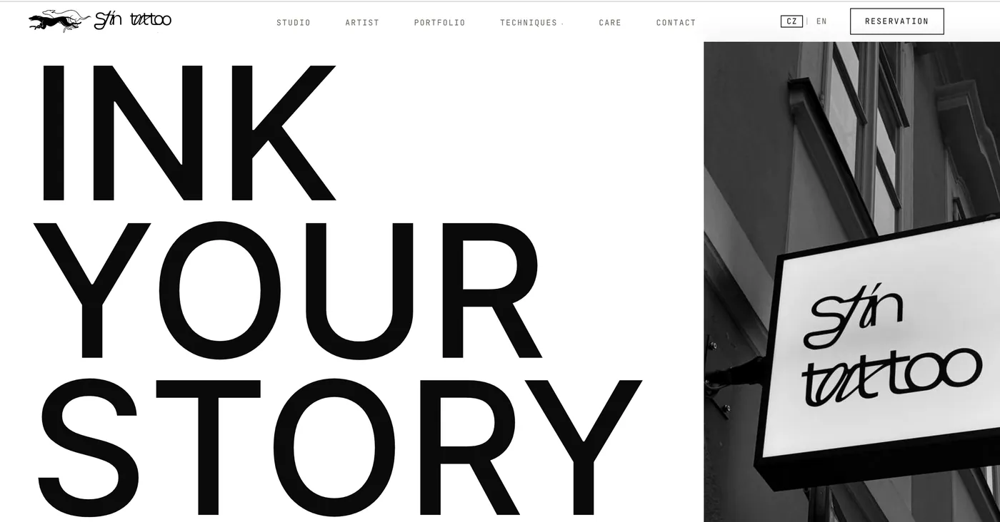

Коли портфоліо is сторінкою продажу.
Ніхто не бронює тату після абзацу тексту. Бронюють після зображення, від якого думаєш: ось ця лінія, ось ця рука, ось людина, яка намалює те, що в мене в голові.

З чого почалося
У тату-студії на Малій Страні особлива проблема. Вона стоїть в одному з найбільш прохідних районів Європи, що звучить як перевага, але здебільшого нею не є: пішохідний потік там — туристи, а турист, який бронює постійне тату на короткому виїзді, — найменш цінний і найменш повторюваний клієнт.
Клієнти, під яких варто будувати, — це ті, хто місяцями досліджує стиль, зберігає референси й хоче конкретну майстриню. Вони шукають за стилем — fine-line, орнаментал, мікрореалізм, — а не за вулицею.
Більшість тату-сайтів — це галерея з номером телефону. Галерея правильна. Записи коштує брак структури навколо неї.
Підхід
Портфоліо впорядкували за стилем, а не за хронологією, бо стиль — це одиниця, у якій люди шукають, і одиниця, у якій вони вирішують:
- Fine-line і мінімалізм — найбільший обсяг запитів, найщільніша конкуренція і стиль, який найчастіше бронюють як перше тату.
- Орнаментал і рослинні мотиви — дуже візуальні, охоче поширювані, і саме ці роботи найчастіше приходять через збережені референси.
- Графіка та ілюстрація — де продає власний малюнковий голос майстрині, а не техніка.
- Traditional і neo-traditional — обізнана аудиторія, яка оцінює студію за тим, чи тримається лінія.
- Blackwork і леттерінг — шукають іншою лексикою і з іншими очікуваннями щодо перекриттів і масштабу.
- Мікрореалізм — колір і чорно-сірий розділені, бо це фактично дві різні навички, і порівнюють їх саме так.
Кожен стиль — справжня точка входу, тож людина, яка прийшла із запиту про стиль, бачить саме ці роботи, а не гортає змішану стрічку в надії їх знайти.
Частина, яку більшість студій пропускає: догляд
Контент про догляд — це зазвичай PDF, який дають на виході. На сайті він робить три речі одразу: знімає тривогу про загоєння, що зупиняє людей перед записом, ранжується за справді обʼємним набором запитів і дає наявним клієнтам привід повернутися на сайт, а це найдешевша робота з репутацією, яку може зробити студія.
У студії, яку веде майстриня, саме вона is брендом. Профіль Анни несе всю практику: підхід до індивідуальних ескізів, консультацію, атмосферу. «Затишно» тут не прикраса: для першого тату відчуття від приміщення — велика частина рішення.
Що було зроблено
- Сайт із портфоліо за стилями — галерея побудована як навігація, а не як прокрутка.
- Профіль майстрині — людина й спосіб роботи, подані як причина записатися, а не як біографія.
- SEO й локальний пошук — запити за стилями поряд із сигналами Праги й Малої Страни.
- Розділ про догляд — практичні поради, які водночас закривають запити.
- Запис після консультації — форма запису під індивідуальні роботи, де розмова має відбутися ще до того, як зʼявиться ціна.
- Bilingual build — англійська й чеська, для двох аудиторій, які шукають різними словами й цінують різне.
Працюючі шари
Результати
До публікації, коли Search Console набере достатньо історії: запити за стилями в топі, сторінки входу за стилем і заповнення форми консультації в розрізі мов.
"[ ВІДГУК КЛІЄНТА — зібрати ]"
Що далі
Google Бізнес-профіль і відгуки: у такому щільному районі саме карти вирішують, до кого зайдуть. Далі — рівний ритм публікації нових робіт за стилями, найближче до самопідтримуваного контент-двигуна, що може бути в тату-студії.
Візуальний бізнес, невидимий у пошуку?
Якщо продукт — це сама робота, завдання сайту зробити її знаходжуваною для тих, хто вже шукає саме цей стиль.